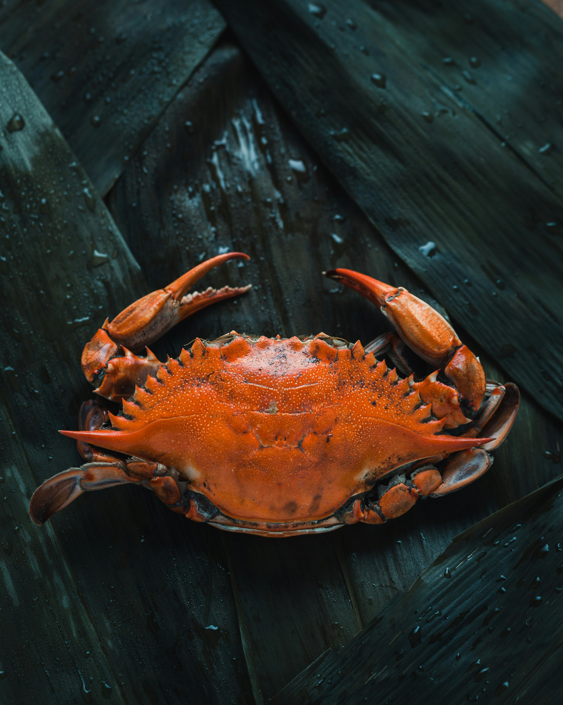

Your Firm
Working While
You Sleep.
CLAWERN
Drop documents in a folder. Clawern reviews them overnight.
Critical findings hit your phone.
1
lavern claw init2
lavern claw start3 Drop files. Walk away.
Autonomous Review
Watches your folder. Parses PDFs, DOCX, Markdown. Infers what work is needed. Dispatches the full multi-agent pipeline. Delivers results.
Confidential by Default
Sensitive documents never leave your machine. On-device analysis via local models. Privilege preserved. Zero cost.
Precedent Board
Cross-document institutional memory. Findings from prior reviews inform future analysis. The firm gets smarter with every document.
Voice Dispatch
"What's the status?" from your phone. Telegram alerts when critical findings arrive. Weekly digest of what the firm did.
Pause & Resume
One click to pause processing. Changes queue silently. Resume triggers rescan. Budget-aware — never overspends.
Mac or Linux
macOS LaunchAgent or Linux systemd. Runs as a background service. Starts on boot. Restarts on crash. The firm never sleeps.